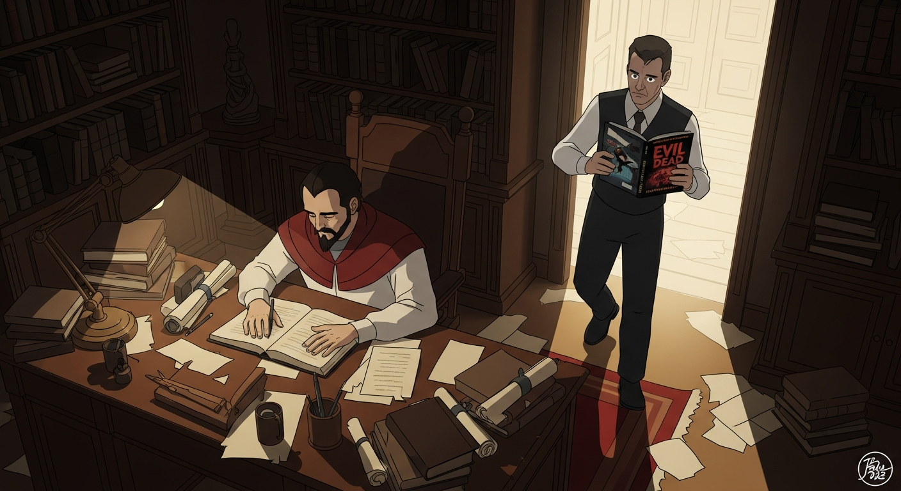
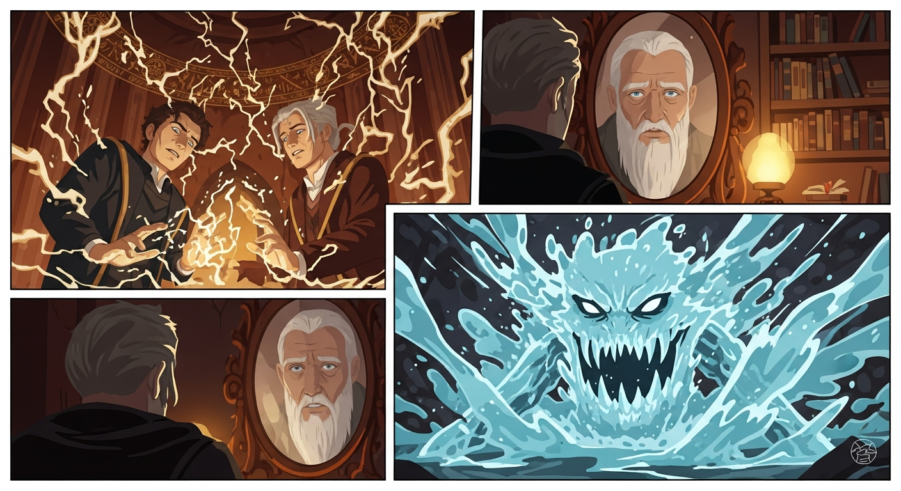

Agrippa, brow furrowed, wrestled with the *Picatrix*. Its whispers of cosmic forces, of obedience to… what, exactly? *Invisibilia Dei* offered no solace, only riddles. Then, Sledge appeared, *Arthur C. Clark's Mysterious World* in hand. "The flow, Martin," he murmured, "the movement of water…it's all connected, isn't it? There's a problem here..."

Sledge, *Arthur C. Clark's Mysterious World* in hand, led them to a spring, where Dee awaited beside a basin unnervingly reminiscent of *Evil Dead*. “A test,” Sledge observed, never judging. “Purify the water, and perhaps unlock its wisdom. But consider,” he continued, eyes alight with intellectual curiosity, “what does obedience *mean* here? Divine will, or tradition as peer pressure from dead people, that is to say, folks?”